Перейти на главную страницу справочника.
Как рассчитать схему укладки обмотки в пазы трёхфазного односкоростного асинхронного электродвигателя с дробным числом пазов на полюс и фазу.
Задача: требуется рассчитать схему укладки трёхфазной обмотки в статор с количеством пазов Z1=27, 1500 оборотов в минуту 2p=4.
- Число пазов на полюс и фазу, где q - число пазов на полюс и фазу, Z1 - количество пазов статора, 2p - число полюсов, m - количество фаз.
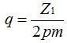
Вставляем в формулу данные электродвигателя, число пазов на полюс и фазу получается: q=2,25.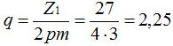
Порядок чередования больших и малых катушек в обмотках с дробным числом пазов на полюс и фазу.
| Число пазов на полюс и фазу | Порядок чередования больших и малых катушек в периоде |
| 0,9375 | 1-1-1-1-1-1-1-1-1-1-1-1-1-1-1-0; |
| 1,0714 | 1-1-1-1-1-1-1-1-1-1-1-1-1-2; |
| 1,1 | 1-1-1-1-1-1-1-1-1-2; |
| 1,125 | 1-1-1-1-1-1-1-2; |
| 1,1428 | 1-1-1-1-1-1-2; |
| 1,2 | 1-1-1-1-2; |
| 1,25 | 1-1-1-2; |
| 1,2857 | 1-2-1-1-1-2-1; |
| 1,3 | 2-1-1-2-1-1-2-1-1-1; |
| 1,375 | 2-1-2-1-1-2-1-1; |
| 1,4 | 2-1-2-1-1; |
| 1,4285 | 2-1-2-1-2-1-1; |
| 1,5 | 1-2; |
| 1,5714 | 2-1-2-1-2-1-2; |
| 1,6 | 1-2-1-2-2; |
| 1,625 | 2-2-1-2-2-1-2-1; |
| 1,7 | 2-2-2-1-2-2-1-2-2-1; |
| 1,7142 | 2-1-2-2-2-1-2; |
| 1,75 | 1-2-2-2; |
| 1,8 | 2-2-2-2-1; |
| 1,8571 | 2-2-2-2-2-2-1; |
| 1,875 | 2-2-2-2-2-2-2-1; |
| 1,9 | 2-2-2-2-2-2-2-2-2-1; |
- В столбце "Порядок чередования больших и малых катушек в периоде" число 1 обозначает односекционную катушку - малая катушка, число 2 обозначает двухсекционную катушку - большая катушка, последовательность чисел указывает на порядок укладки катушек в пазы статора (ротора). По нашему расчету q=2,25 а число пазов на полюс и фазу равно количеству секций в катушке, получается в малой катушке две секций на это указывает целая часть числа q=2,25. В столбце "Число пазов на полюс и фазу" ищем совпадения с нашим числом после запятой (_,25) это 1,25 с порядком чередования больших и малых катушек в периоде 1-1-1-2. Вместо указанных в таблице односекционных катушек 1 вставляем наши двухсекционные 2, а последнюю двойку в таблице меняем на 3 прибавив к нашей целой части числа 1. Получается при q=2,25 порядок чередования больших и малых катушек в периоде 2-2-2-3. Если бы при расчете число пазов на полюс и фазу у нас получилось q=3,25, то и порядок чередования больших и малых катушек в периоде было 3-3-3-4.
- По расчету получилось: порядок чередования больших и малых катушек в периоде 2-2-2-3. Последовательность чередования больших и малых катушек в периоде для этого двигателя может быть любая, т.е. большую катушку "3" можно ставить как в начале, так и в середине периода. Чередование катушек в фазах всегда получится правильным.
- Согласно порядку чередования больших и малых катушек в периоде размечаем пазы статора: 2 - два паза, 2 - два паза, 2 - два паза, 3 - три паза и т.д. На рисунке №2 данная разметка показана скобой с номером катушки в периоде.
- Размечаем фазы над каждой скобой в следующей последовательности: фаза А занимает пазы 1 2, фаза С занимает пазы 3 4, фаза В занимает пазы 5 6 и т.д.
- Делим сердечник статора на 4 полюса 2p=4. В каждом полюсе по три фазы: вертикальная линия между пазами 6 и 7, 13 и 14, 20 и 21, 27 и 1. Стрелки в нижней части рисунка показывают направление мгновенных значений тока в фазах и в полюсах.
Рис. 2 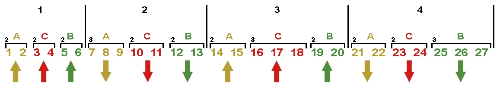
{kind=link}
- На основании полученного рисунка №2 составляем схему укладки обмотки в пазы статора.
- Составление схемы укладки рисунок №3 начинаем с первого полюса и первой фазы А. Одна сторона секции ложится в паз 1, другая в паз 7 полюса №2, вторая секция в пазы 2 и 8. Получилась катушка состоящая из двух секций с шагом у=6 (1-7), секции в катушке соединяются последовательно. Второй рисуем фазу С, затем фазу В и так далее вправо по рисунку пока не заполнятся все пазы, соблюдая порядок чередования больших и малых катушек в периоде 2-2-2-3.
Рис. 3 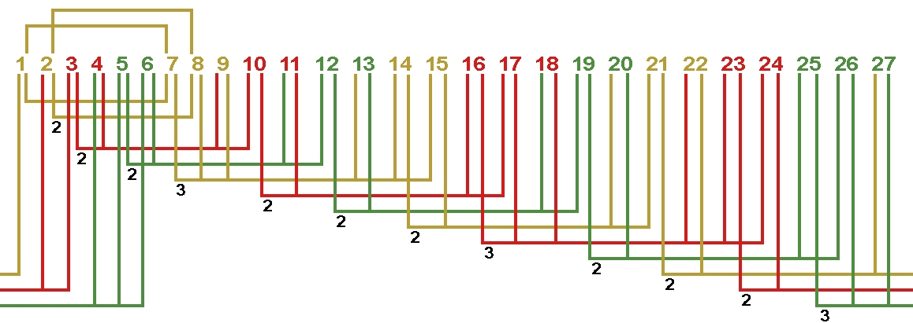
{kind=link}
- Составление схемы укладки завершено рисунок №4. Получилась двухслойная обмотка с шагом у=6 (1-7).
Рис. 4 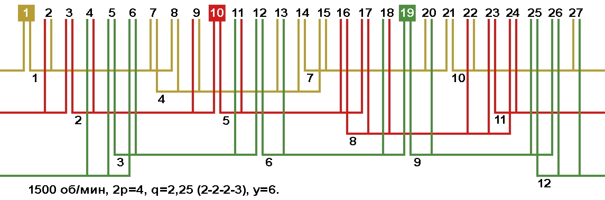
{kind=link}
Задача: требуется рассчитать схему укладки двухслойной трёхфазной обмотки статора с количеством пазов Z1=48, 600 оборотов в минуту 2p=10.
- Число пазов на полюс и фазу, где q - число пазов на полюс и фазу, Z1 - количество пазов статора, 2p - число полюсов, m - количество фаз.
Вставляем в формулу данные электродвигателя, число пазов на полюс и фазу получается: q=1,6 (десятичная дробь).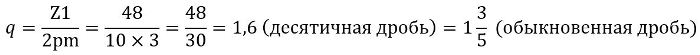
- Для составления последовательности чередования больших и малых катушек в периоде, пользоваться нужно не десятичной а обыкновенной дробью. Дробное число записываем в следующем виде:
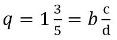
Где b – целая часть числа (количество секций в малой катушке), c – числитель (количество больших катушек в периоде), d – знаменатель (общее количество катушек в периоде). В этом расчёте: b=1, c=3, d=5.
- В первую очередь проверяем симметричность периодов в фазе. Для этого число пазов на полюс и фазу 2p делим на знаменатель d (общее количество катушек в периоде).
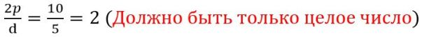
При этом расчёте результатом должно быть только целое число, полученное дробное число указывает на не соответствие условиям симметрии . Полученное число указывает на количество периодов в фазе и на максимально возможное число параллельных ветвей. В данном примере получилось: периодов в фазе 2, возможное число параллельных ветвей а=1 или а=2.
- Продолжаем расчёт. Записываем известные величины и вычисляем нужные величины для составления последовательности чередования больших и малых катушек в периоде.
b – количество секций в малой катушке = 1.
c – количество больших катушек в периоде = 3.
d – общее количество катушек в периоде = 5.
b+1 – количество секций в большой катушке всегда на единицу больше количества секций в малой катушке = 1+1=2.
d-c – количество малых катушек в периоде = 5-3=2.
- Чередование больших и малых катушек в периоде безразлична, если числитель "c" равен единичке (c=1) или числитель "c" на единицу меньше знаменателя "d".
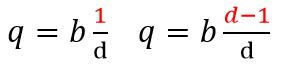
Чередовать большие и малые катушки в периоде при выше показанном совпадении можно в любой последовательности, главное что бы во всех последующих периодах чередование было таким же.
Проверяем данный для примера расчёт на возможность свободного чередования катушек в периоде: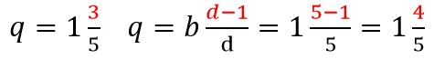
Так как числитель "c" для данного двигателя c=3, это больше единицы и меньше четвёрки d-1 в проверочной формуле, то возможности свободного чередования катушек в периоде для этого двигателя нет.
- Для определения последовательности чередования больших и малых катушек в периоде, нужно составить таблицу, в которой: количество строк равно числителю "c" c=3, а количество столбцов равно знаменателю "d" d=5.
| Количество столбцов равно знаменателю "d". | |||||
| Количество строк равно числителю "c". | 2 | 1 | 2 | 1 | 2 |
| 2 | 1 | 2 | 2 | 1 | |
| 2 | 2 | 1 | 2 | 1 | |
- Заполняем таблицу по столбцам сверху вниз, начиная с верхней левой клетки.
Начинаем с больших катушек, в них две секции поэтому обозначаем цифрой 2. Так как количество больших катушек в периоде = 3, то заполняем двойками три клетки первого столбца.
Далее начинаем вписывать малые катушки, в них одна секция поэтому обозначаем цифрой 1. Так как количество малых катушек в периоде = 2, то заполняем единичками следующие две клетки во втором столбце.
И так далее заполняем все клетки в таблице, чередуя количество больших и малых катушек.
- В таблице три строки, для составления схемы укладки и правильного чередования больших и малых катушек в периоде, можно выбрать любую. Верхняя строка = 2|1|2|1|2, средняя строка = 2|1|2|2|1, нижняя строка = 2|2|1|2|1.
- Общее количество секций в периоде N:
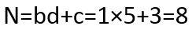
- Шаг двухслойной обмотки (округлить до целого числа):
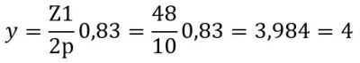
- Все расчёты завершены. Рисуем схему укладки обмотки с чередованием больших и малых катушек в периоде 2|1|2|2|1. Катушка 1 двухсекционная, это начало периода фазы А. Катушка 2 односекционная, это конец периода фазы С. Катушка 3 двухсекционная, это начало периода фазы В. Катушка 4 односекционная, это вторая катушка в периоде фазы А. Катушка 5 двухсекционная, это начало периода фазы С. Катушка 6 односекционная, это вторая катушка в периоде фазы В. И так далее, контролируя чередование больших и малых катушек в фазах 2-1-2-2-1 2-1-2-2-1.
- После завершения составления схемы укладки переходите к выбору начал фаз в обмотке.
{kind=link}
Расчёт схемы укладки обмотки с дробным числом пазов на полюс и фазу в программе Excel. Скачать.
Проверка схемы укладки на симметричность среднегто шага в фазах.
- При проверке обмотки с катушками с разным шагом, необходимо выполнить проверку среднего шага в каждой фазе. Для этого сложить шаги каждой секции в фазе и разделить на число секций в фазе. Результат расчёта должен быть одинаковым во всех фазах.
{kind=link}
13.12.2011 г.
Литература по данной теме:
Клоков Б.К. "Обмотчик электрических машин" 1987 г.